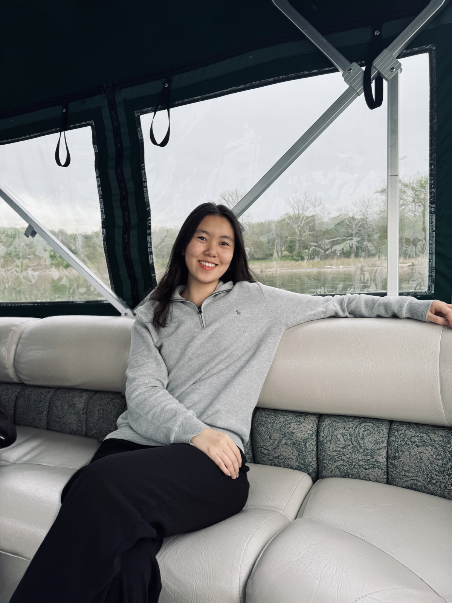
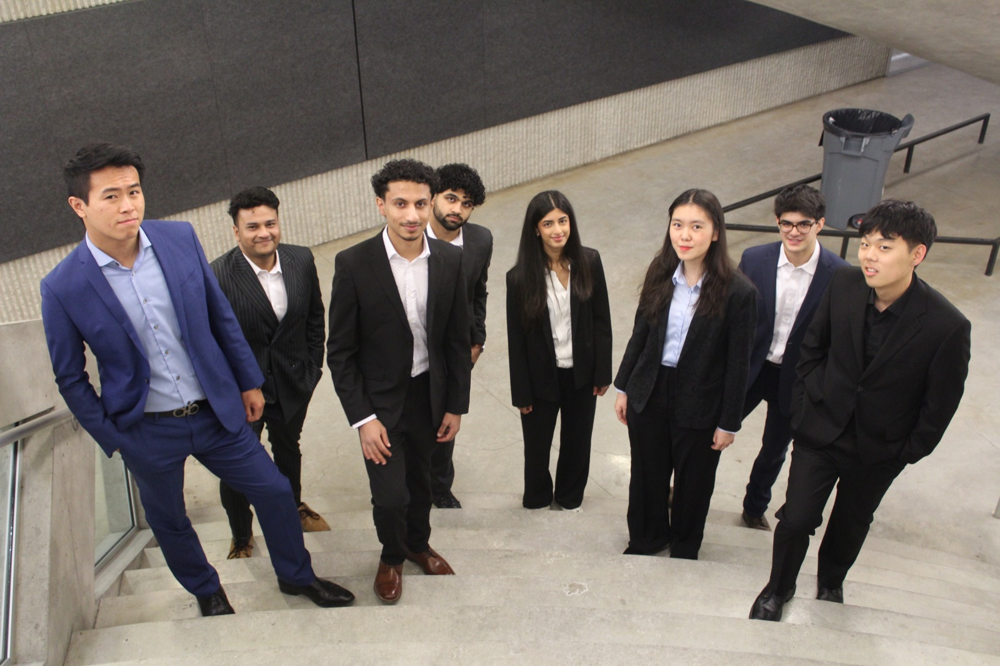
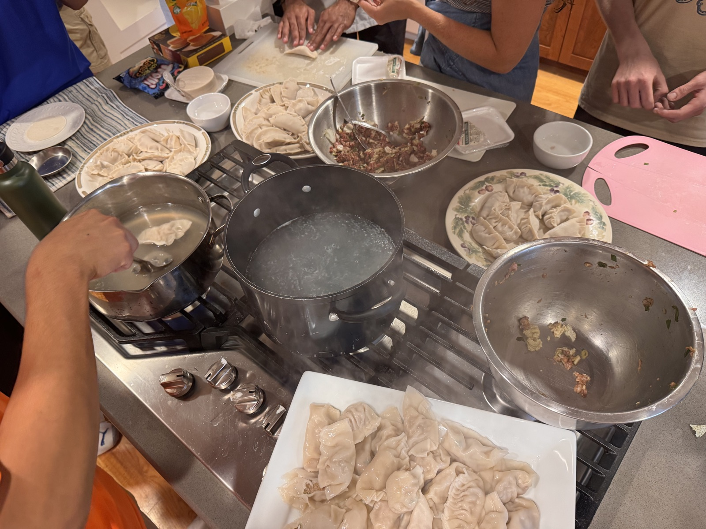
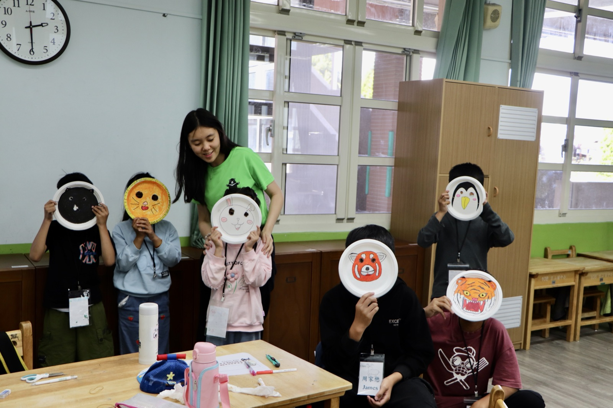
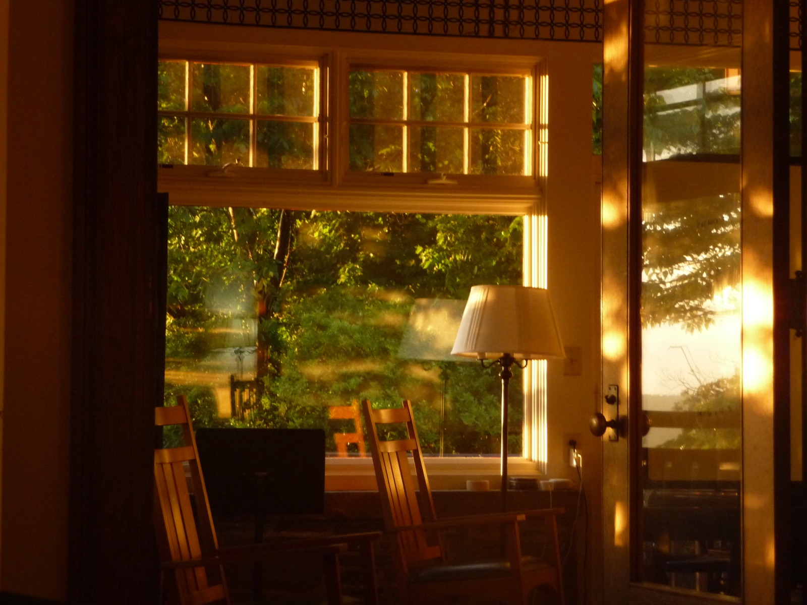
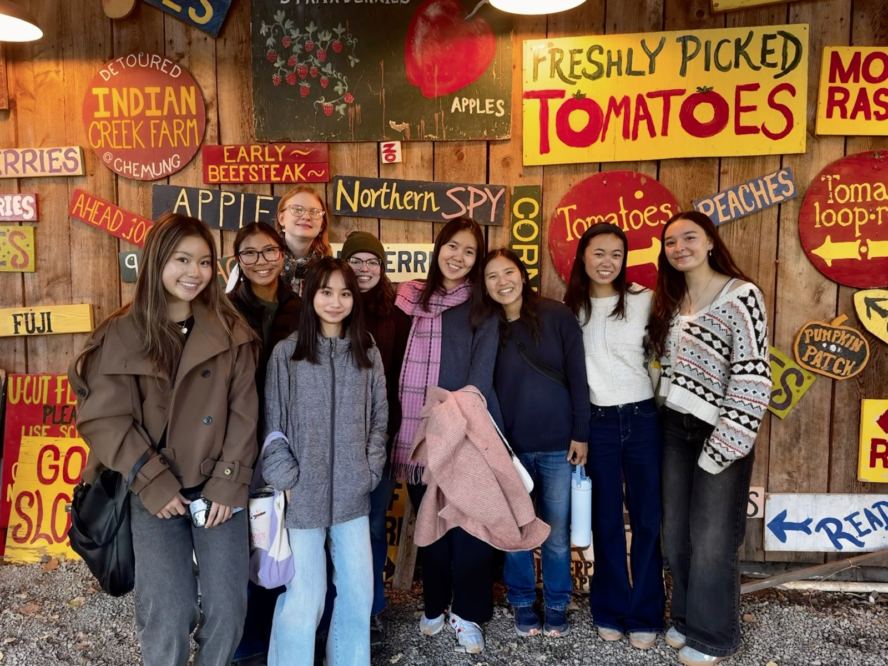

Modeling pesticide outcomes with Bayesian regression
A reproducible R pipeline for a 90,000+ row agricultural dataset, with preliminary regressions across 15 outcomes. With Prof. Daniel Kowal.
r · lm · bayesian box-cox · semiparametric bayesStatistics student at Cornell. I clean messy data, build pipelines people can rerun, and plan the event where we present the results.

| feature | value | notes |
|---|---|---|
| major | BA Statistical Sciences | Cornell University, class of 2029 |
| hometown | New York City | Bronx High School of Science |
| tools | Python · R · SQL · Excel · Git | plus APIs, and Figma for anything visual |
| data_work | research · consulting · analytics | from Bayesian models to scraped databases |
| events_run | conferences · socials · alumni events | 150+ at Cornell CES, 13 for alumni affairs |
| languages | English · Mandarin · Shanghainese | learning Cantonese |
| social_battery | introvert, very social | shows up for everyone |
| off_hours | cooking · photography · music | violin, piano, vocals |
I grew up in New York City, went to Bronx Science, and now study Statistical Sciences at Cornell. I do research in R, help other researchers check that their published results actually replicate, and work on analytics and operations at a startup.
Statistics drew me in not for the math itself, but for what it lets you do with messy, real-world situations, finding structure where things seem complicated. I'm drawn to problems where the analysis actually changes a decision: how a company acquires clients, how operations break down, how systems hold together under pressure. I want to be close to the outcome.
Outside of data, I run internal operations for a data-focused tech consulting club, work in the campus library, lead a community Bible study with Cru, and serve at a local church. I've also taught English to kids in the mountains of Taiwan. I'm an introvert who loves people, and usually the one who turns a messy plan into a calendar and a checklist.
Every skill here points back to something I've actually done.
Ran regressions across 15 outcomes with lm, Bayesian Box-Cox and semiparametric Bayesian models.
Check whether authors' code and data reproduce their results for AEA journal submissions.
Cleaned and documented 90,000+ observations; scraped and cleaned public data on 150+ locations.
Mapped a 6-stage sales-to-activation lifecycle and its data flows, including 10+ edge cases.
Executive VP of a 30+ member consulting club: lead client projects, manage a $4,000 budget, and run recruiting for 70+ applicants a semester. Plan trips & host socials for members.
Cold outreach that landed 10+ client meetings; presented process designs to a CEO.
Coordinated 150+ conferences in one summer with Cornell CES; planned 13 alumni-engagement events reaching 800+ students.
Taught English to 12 students in Taiwan; intro Python to middle schoolers.
English, Mandarin, Shanghainese; learning Cantonese. Translation service
Real data work from research, consulting and my internship, plus one project of my own.
Modeling pesticide outcomes with Bayesian regression
A reproducible R pipeline for a 90,000+ row agricultural dataset, with preliminary regressions across 15 outcomes. With Prof. Daniel Kowal.
r · lm · bayesian box-cox · semiparametric bayesCompetitive intelligence database for a healthcare client
Led the project: scraped and cleaned public data across 150+ locations and mapped parent companies to subsidiaries to support strategy recommendations.
web scraping · data cleaning · entity mappingMapping a startup's lead-to-activation pipeline
Documented 6 stages, decision gates, re-entry paths and tool handoffs at SupplyBistro, then refined the design with the CEO.
google sheets · clickup · process designWhat 9,770 photos say about how I see
Read the EXIF metadata behind two years of iPhone photos to find when, where and how I shoot. Spoiler: 7pm, Saturdays, and wherever I'm traveling.
see here → python · osxphotos · pandas · matplotlibSupplyBistro · Ithaca
Cornell Data Strategy Club

Prof. Daniel Kowal, Cornell University
American Economic Association / Cornell ILR School
Cornell Data Strategy Club · Cornell Conference and Event Services · Cornell Alumni Affairs Student Engagement Committee
BA Statistical Sciences
Ithaca, NY · expected May 2029
Bronx, NY
The parts of me that don't fit on a resume.




Open to internships, research roles, and good conversations about data.